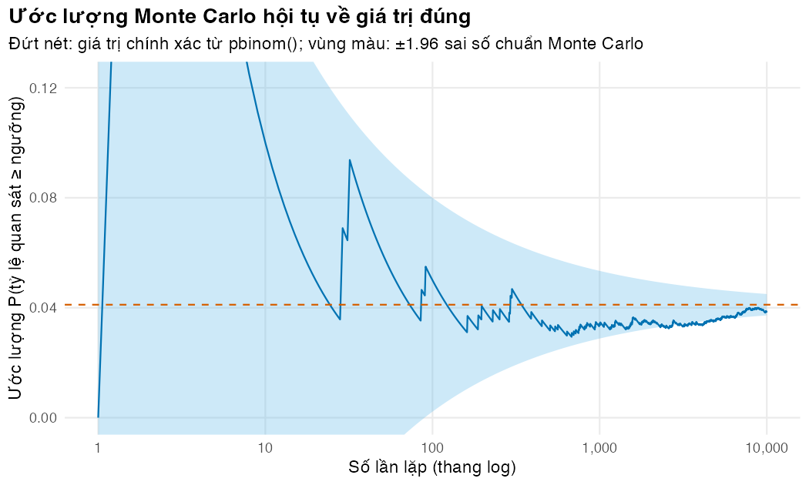
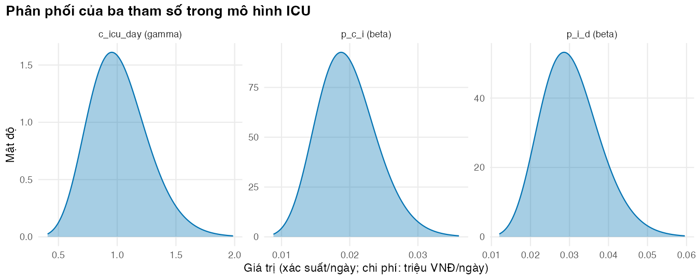
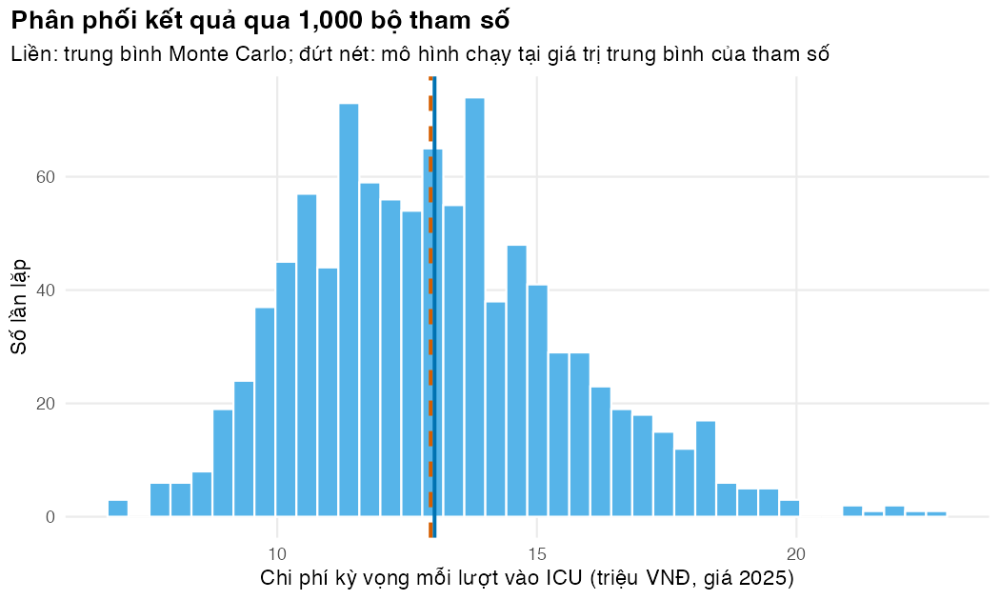

if (!isTRUE(l10n_info()[["UTF-8"]])) invisible(Sys.setlocale("LC_CTYPE", "en_US.UTF-8"))
source("../_shared/R/helpers.R")
source("../_shared/R/vn_data.R")
source("code/model.R")
options(warnPartialMatchDollar = TRUE) # `$` that silently matches a shortened name now warns
library(ggplot2)
p_sim <- read_params("params/amr_sim.csv")
d <- read_params("params/teaching_demos.csv")
q <- load_icu_params() # params/icu_markov.csv + the shared ICU bed-day and drug pricesBài 6: Ngẫu nhiên, mô phỏng Monte Carlo và sai số Monte Carlo
Rút số ngẫu nhiên có kiểm soát, ước lượng bằng mô phỏng, đo độ chính xác của mô phỏng, và chạy thử một phân tích độ nhạy xác suất
Vì sao bạn nên quan tâm?
Giám đốc một bệnh viện tuyến trung ương hỏi phòng Kế hoạch tổng hợp: một lượt nằm ICU của người bệnh có nguy cơ mắc CRE tốn bao nhiêu? Mô hình của module trả lời 12,954,108 VNĐ (giá 2025), bằng 2.4 tháng lương tối thiểu vùng I theo mức từ 1/1/2026 (Chính phủ 2025). Nhưng mọi đầu vào đều bất định: xác suất mắc mới CRE suy ra từ một điều tra cắt ngang, và chỉ riêng giá một ngày colistin trong bảng giá chung đã dao động từ 2,700,000 VNĐ đến 3,402,000 VNĐ tùy loại lọ, theo giá trúng thầu năm 2023 của một bệnh viện tuyến trung ương (Bệnh viện Trung ương Thái Nguyên 2023). Một con số đứng một mình che đi bất định đó. Bài này dạy rút số ngẫu nhiên có kiểm soát, chạy mô hình hàng nghìn lần và báo cáo một khoảng kèm sai số Monte Carlo, nền tảng của phân tích độ nhạy xác suất (PSA).
Mục tiêu học tập
Sau bài này, bạn có thể:
- Dùng bốn họ hàm
r*,d*,p*,q*của một phân phối xác suất trong R. - Dùng
set.seed()để mô phỏng tái lập được, và tránh các lỗi đặt seed thường gặp. - Ước lượng một xác suất bằng mô phỏng Monte Carlo, tính sai số Monte Carlo và số lần lặp cần thiết.
- Phân biệt bất định ngẫu nhiên (stochastic uncertainty, bậc một) với bất định tham số (parameter uncertainty, bậc hai).
- Lan truyền bất định tham số qua một mô hình nhỏ, giải thích vì sao trung bình kết quả khác kết quả tại trung bình tham số, và nói được khi nào chênh lệch đó đáng kể.
Ý chính
- Mỗi phân phối có bốn hàm:
rrút số ngẫu nhiên,dmật độ hoặc xác suất tại một điểm,pxác suất tích lũy,qphân vị. Ví dụrbinom,dbinom,pbinom,qbinom. - Máy tính sinh số giả ngẫu nhiên. Cùng một seed (giá trị khởi tạo bộ sinh số ngẫu nhiên) thì cùng một dãy số. Đặt
set.seed()một lần trước mỗi phân tích ngẫu nhiên, không đặt lại bên trong vòng lặp. - Mô phỏng Monte Carlo: rút nhiều mẫu, tính đại lượng quan tâm cho từng mẫu, rồi lấy trung bình. Trung bình đó hội tụ về giá trị đúng khi số lần lặp tăng.
- Sai số Monte Carlo của một trung bình bằng \(s/\sqrt{n}\). Muốn giảm sai số đi 10 lần, cần tăng số lần lặp lên 100 lần.
- Phân phối cho tham số mô hình được chọn theo miền giá trị: beta cho xác suất, gamma cho chi phí, log-chuẩn cho tỷ số. M03 Bài 2 dạy cách chọn tham số của phân phối.
- Phân tích độ nhạy xác suất (PSA) là mô phỏng Monte Carlo trên tham số (Doubilet và c.s. 1985). Với mô hình phi tuyến, trung bình kết quả nói chung khác kết quả tại trung bình tham số; chênh lệch chỉ lớn khi cả độ cong lẫn phương sai của tham số đều lớn.
- Luôn báo cáo số lần lặp và sai số Monte Carlo cùng kết quả mô phỏng (Koehler, Brown, và Haneuse 2009).
Nội dung
Phân phối xác suất trong R
Số chủng đề kháng \(X\) trong \(n\) chủng được thử nghiệm, khi tỷ lệ đề kháng thật là \(p\), tuân theo phân phối nhị thức \(X \sim \text{Binomial}(n, p)\). R có bốn hàm cho phân phối này, và cùng quy ước tên cho mọi phân phối khác (norm, beta, gamma, lnorm, unif):
| Hàm | Trả lời câu hỏi | Ví dụ |
|---|---|---|
dbinom(k, n, p) |
\(P(X = k)\) | Xác suất đúng \(k\) chủng đề kháng |
pbinom(k, n, p) |
\(P(X \le k)\) | Xác suất tối đa \(k\) chủng đề kháng |
qbinom(u, n, p) |
\(k\) nhỏ nhất để \(P(X \le k) \ge u\) | Phân vị 97.5% |
rbinom(m, n, p) |
\(m\) giá trị ngẫu nhiên | Mô phỏng \(m\) năm giám sát |
Ví dụ xuyên suốt của bài là một câu hỏi giám sát: một bệnh viện tỉnh có tỷ lệ K. pneumoniae kháng carbapenem thật bằng mức toàn quốc, 37% (Larsson và c.s. 2025), và thử nghiệm 50 chủng mỗi năm. Bệnh viện đặt ngưỡng cảnh báo 50%. Xác suất để tỷ lệ quan sát được đạt hoặc vượt ngưỡng đó (tức \(X \ge k\)) chỉ do ngẫu nhiên là bao nhiêu? Câu hỏi này có lời giải chính xác bằng pbinom(), nên ta dùng nó để kiểm tra Monte Carlo. Số chủng và ngưỡng cảnh báo là giá trị minh họa.
Số giả ngẫu nhiên và seed
Bộ sinh số của R (mặc định là Mersenne-Twister) là một thuật toán tất định. Từ một trạng thái khởi đầu, nó sinh ra một dãy số trông như ngẫu nhiên. set.seed(2025) đặt trạng thái khởi đầu đó, nên mọi lần chạy cho cùng một dãy số. Sau khi đặt seed, mỗi lệnh rút số ngẫu nhiên đẩy dãy số đi tiếp. Vì vậy, thêm một lệnh runif() ở giữa script sẽ làm thay đổi mọi số ngẫu nhiên phía sau. Đó là lý do mỗi script trong khóa học đặt seed ngay trước khối mã ngẫu nhiên của nó. Hai hàm mô phỏng dữ liệu của module (simulate_isolates() và make_messy()) nhận seed làm đối số và khôi phục trạng thái bộ sinh số khi chạy xong, nên gọi chúng không làm đổi dãy số tiếp theo của bạn; hãy làm như vậy với hàm của riêng bạn.
Ước lượng Monte Carlo và sai số của nó
Muốn tính một kỳ vọng \(\theta = E[g(X)]\), ta rút \(x_1, \dots, x_n\) rồi lấy
\[ \hat\theta_n = \frac{1}{n}\sum_{i=1}^{n} g(x_i), \qquad \widehat{SE}(\hat\theta_n) = \frac{s}{\sqrt{n}}, \]
trong đó \(s\) là độ lệch chuẩn của các \(g(x_i)\). Khi \(g\) là hàm chỉ báo (1 nếu sự kiện xảy ra, 0 nếu không), \(\hat\theta_n\) là một tỷ lệ và \(SE = \sqrt{\theta(1-\theta)/n}\). Công thức này cho ngay số lần lặp cần để đạt một độ chính xác mong muốn: \(n \approx \theta(1-\theta)/SE^2\). Sai số Monte Carlo là sai số của phép tính, không phải bất định về thế giới thực. Nó cho biết nên tin bao nhiêu chữ số của kết quả mô phỏng (Koehler, Brown, và Haneuse 2009).
Hai loại bất định
Trong mô hình quyết định, bất định ngẫu nhiên (stochastic uncertainty, bậc một) là khác biệt kết cục giữa những người bệnh giống hệt nhau do may rủi. Bất định tham số (parameter uncertainty, bậc hai) là việc ta không biết chắc giá trị thật của tham số vì nó được ước lượng từ mẫu có hạn (Briggs và c.s. 2012). Mô hình đoàn hệ ở Bài 2 đã tính trung bình cho cả đoàn hệ, nên không có bất định bậc một. Để biểu diễn bất định bậc hai, ta gán cho mỗi tham số một phân phối, rút nhiều bộ tham số và chạy mô hình cho từng bộ. Đó chính là phân tích độ nhạy xác suất (PSA, probabilistic sensitivity analysis) (Doubilet và c.s. 1985). M03 dạy PSA đầy đủ; M04 dạy mô phỏng vi mô, nơi bất định bậc một xuất hiện.
Trung bình của kết quả khác kết quả tại trung bình
Nếu kết quả \(f(\theta)\) là hàm phi tuyến của tham số, thì nói chung \(E[f(\theta)] \ne f(E[\theta])\). Khai triển Taylor bậc hai cho thấy chênh lệch xấp xỉ
\[ E[f(\theta)] - f(E[\theta]) \approx \tfrac{1}{2}\, f''(\mu)\, \mathrm{Var}(\theta), \]
với \(\mu = E[\theta]\). Dấu của chênh lệch theo dấu của độ cong \(f''\) (hàm lồi cho trung bình kết quả lớn hơn, hàm lõm cho nhỏ hơn), và độ lớn tăng theo cả độ cong lẫn phương sai của tham số. Vì vậy chênh lệch có thể rất nhỏ dù mô hình phi tuyến: chỉ cần tham số ít biến thiên hoặc đường cong gần thẳng. Mô hình chạy một lần tại giá trị trung bình của tham số chỉ là xấp xỉ của kết quả kỳ vọng. Muốn biết chênh lệch có thật hay chỉ là nhiễu, phải so nó với sai số Monte Carlo.
Thực hành
Nạp hàm, bảng tham số giảng dạy và bảng tham số của mô hình ICU.
Bốn họ hàm cho phân phối nhị thức, cùng lời giải chính xác của câu hỏi giám sát. Kiểm tra: xác suất chính xác nằm giữa 0 và 1, và rbinom() trả về số nguyên.
# Number of carbapenem-resistant K. pneumoniae X among n tested, X ~ Binomial(n, p).
# True proportion = the national figure used as anchor in params/amr_sim.csv
n <- d$surv_n; p_true <- p_sim$target_kpn_mem
k_alert <- ceiling(d$surv_alert * n) # alert: observed share AT or ABOVE the threshold (X >= k)
c(d = dbinom(k_alert, n, p_true), # P(X = k)
p = pbinom(k_alert - 1, n, p_true), # P(X <= k - 1)
q = qbinom(0.975, n, p_true)) # 97.5% quantile d p q
0.01951373 0.95890388 25.00000000 set.seed(1)
rbinom(5, n, p_true) # five simulated years[1] 16 17 19 23 16p_alert_exact <- 1 - pbinom(k_alert - 1, n, p_true) # P(X >= k): reaches or exceeds
p_alert_strict <- 1 - pbinom(k_alert, n, p_true) # P(X > k): strictly exceeds
c(reaches_or_exceeds = p_alert_exact, strictly_exceeds = p_alert_strict)reaches_or_exceeds strictly_exceeds
0.04109612 0.02158239 stopifnot(p_alert_strict < p_alert_exact) # the off-by-one changes the answerNgưỡng cảnh báo tương ứng với ít nhất 25 chủng đề kháng trên 50. Xác suất chính xác để đạt hoặc vượt ngưỡng chỉ do ngẫu nhiên là 0.0411, tức \(P(X \ge k) = 1 - P(X \le k - 1)\). Viết nhầm thành \(P(X > k)\), tức 1 - pbinom(k, n, p), cho 0.0216: lệch một đơn vị đổi kết quả đáng kể. Hãy viết rõ “đạt hoặc vượt” hay “vượt hẳn”.
Seed hoạt động thế nào. Kiểm tra: hai lần rút sau cùng một seed giống hệt nhau; lần rút thứ ba (không đặt lại seed) khác; và gọi simulate_isolates() giữa chừng không làm đổi số được rút kế tiếp.
set.seed(2025); draw_1 <- runif(3)
set.seed(2025); draw_2 <- runif(3)
draw_3 <- runif(3) # the stream continues: new numbers
rbind(draw_1, draw_2, draw_3) [,1] [,2] [,3]
draw_1 0.7326202 0.4757614 0.5142159
draw_2 0.7326202 0.4757614 0.5142159
draw_3 0.4984323 0.7802845 0.5042522stopifnot(identical(draw_1, draw_2), !identical(draw_2, draw_3))
RNGkind()[1:2][1] "Mersenne-Twister" "Inversion" # The simulators of this module restore the random stream when they finish:
# calling them does not change the numbers you draw next
set.seed(1); next_a <- runif(1)
set.seed(1); invisible(simulate_isolates(p_sim, seed = 2025)); next_b <- runif(1)
stopifnot(identical(next_a, next_b))Ước lượng Monte Carlo của cùng xác suất đó (tỷ lệ quan sát đạt hoặc vượt ngưỡng) với bốn số lần lặp tăng dần, mỗi lần gấp 10. Kiểm tra: sai số Monte Carlo (mc_se) giảm dần, và sai số thật so với lời giải chính xác (abs_error) thường cùng bậc độ lớn với mc_se.
# Monte Carlo estimate of P(observed share >= alert) and its Monte Carlo standard error
n_sims <- d$n_sim * c(0.1, 1, 10, 100)
set.seed(606)
mc_tab <- data.frame(n_sim = n_sims, estimate = NA, mc_se = NA, abs_error = NA)
for (i in seq_along(n_sims)) {
hit <- rbinom(n_sims[i], n, p_true) >= k_alert
mc_tab$estimate[i] <- mean(hit)
mc_tab$mc_se[i] <- sqrt(mean(hit) * (1 - mean(hit)) / n_sims[i])
mc_tab$abs_error[i] <- abs(mean(hit) - p_alert_exact)
}
mc_print <- mc_tab
mc_print[, -1] <- round(mc_print[, -1], 4)
mc_print$n_sim <- fmt_num(mc_print$n_sim)
mc_print n_sim estimate mc_se abs_error
1 100 0.0600 0.0237 0.0189
2 1,000 0.0560 0.0073 0.0149
3 10,000 0.0415 0.0020 0.0004
4 100,000 0.0409 0.0006 0.0002# Each tenfold increase in draws shrinks the standard error about sqrt(10)-fold
se_ratio <- mc_tab$mc_se[2] / mc_tab$mc_se[3]Mỗi lần tăng số lần lặp lên 10 lần, sai số Monte Carlo giảm khoảng \(\sqrt{10}\) lần: từ 1,000 lên 10,000 lần lặp, tỷ số giữa hai sai số là 3.65, so với \(\sqrt{10}\) = 3.16.
Biểu đồ hội tụ: trung bình cộng dồn của các lần lặp, so với giá trị chính xác và dải ±1.96 sai số Monte Carlo. Kiểm tra: đường ước lượng dao động mạnh lúc đầu rồi nằm gần như trọn trong dải khi số lần lặp lớn.
set.seed(607)
n_conv <- 10 * d$n_sim
hits <- rbinom(n_conv, n, p_true) >= k_alert
conv <- data.frame(i = seq_len(n_conv), mean = running_mean(hits))
conv$se <- sqrt(p_alert_exact * (1 - p_alert_exact) / conv$i)
fig_conv <- ggplot(conv, aes(i, mean)) +
geom_ribbon(aes(ymin = p_alert_exact - 1.96 * se, ymax = p_alert_exact + 1.96 * se),
fill = pal_course[5], alpha = 0.3) +
geom_line(colour = pal_course[1]) +
geom_hline(yintercept = p_alert_exact, linetype = "dashed", colour = pal_course[2]) +
scale_x_log10(labels = function(x) fmt_num(x)) +
coord_cartesian(ylim = c(0, min(1, 3 * p_alert_exact))) +
labs(x = "Số lần lặp (thang log)", y = "Ước lượng P(tỷ lệ quan sát ≥ ngưỡng)",
title = "Ước lượng Monte Carlo hội tụ về giá trị đúng",
subtitle = "Đứt nét: giá trị chính xác từ pbinom(); vùng màu: ±1.96 sai số chuẩn Monte Carlo") +
theme_course()
save_fig(fig_conv, "l06-convergence.png", width = 7, height = 4.2)
Bao nhiêu lần lặp là đủ? Tính từ công thức sai số, với sai số mục tiêu đặt trong bảng tham số.
# Draws needed so that the Monte Carlo SE of a probability near p is at most target_se
n_needed <- ceiling(p_alert_exact * (1 - p_alert_exact) / d$mc_target_se^2)
n_needed[1] 1577Để sai số Monte Carlo không quá 0.005, cần khoảng 1,577 lần lặp.
Phân phối của ba tham số trong mô hình ICU: hai xác suất (phân phối beta) và giá ngày giường ICU (phân phối gamma quanh giá BHYT). Kiểm tra: trung bình của mỗi phân phối, tính từ dist_p1 và dist_p2, đúng bằng giá trị cơ sở trong CSV.
tab <- attr(q, "table")
show <- c("p_c_i", "p_i_d", "c_icu_day")
dens <- NULL
for (nm in show) {
r <- tab[tab$name == nm, ]
if (r$dist == "beta") {
x <- seq(qbeta(0.001, r$dist_p1, r$dist_p2), qbeta(0.999, r$dist_p1, r$dist_p2), length.out = 300)
y <- dbeta(x, r$dist_p1, r$dist_p2)
} else {
x <- seq(qgamma(0.001, shape = r$dist_p1, scale = r$dist_p2),
qgamma(0.999, shape = r$dist_p1, scale = r$dist_p2), length.out = 300)
y <- dgamma(x, shape = r$dist_p1, scale = r$dist_p2)
x <- x / 1e6; y <- y * 1e6 # show cost in million VND
}
dens <- rbind(dens, data.frame(param = paste0(nm, " (", r$dist, ")"), x = x, y = y))
}
fig_dist <- ggplot(dens, aes(x, y)) +
geom_area(fill = pal_course[1], alpha = 0.35) +
geom_line(colour = pal_course[1]) +
facet_wrap(~param, scales = "free") +
labs(x = "Giá trị (xác suất/ngày; chi phí: triệu VNĐ/ngày)", y = "Mật độ",
title = "Phân phối của ba tham số trong mô hình ICU") +
theme_course()
save_fig(fig_dist, "l06-distributions.png", width = 9, height = 3.6)
# Check: the mean of each distribution equals the base-case value in the CSV
dist_mean <- ifelse(tab$dist == "beta", tab$dist_p1 / (tab$dist_p1 + tab$dist_p2),
ifelse(tab$dist == "gamma", tab$dist_p1 * tab$dist_p2, tab$value))
stopifnot(all(abs(dist_mean - tab$value) / tab$value < 1e-9))
PSA đầu tiên: rút 1,000 bộ tham số, chạy mô hình ICU cho từng bộ, lưu chi phí và số ngày nhiễm khuẩn. Mỗi ma trận được rút ra đều qua check_tm(), và ta ghi lại tổng xác suất rời một trạng thái lớn nhất gặp được. Kiểm tra: không có lỗi, và bảng kết quả có đúng 1,000 dòng.
set.seed(2026)
draws <- draw_params(tab, d$n_sim)
dim(draws)[1] 1000 18out <- data.frame(cost = numeric(d$n_sim), infected_days = numeric(d$n_sim))
for (i in seq_len(d$n_sim)) {
p_i <- q
for (nm in names(draws)) p_i[[nm]] <- draws[i, nm]
check_tm(build_icu_P(p_i)) # every sampled matrix must be valid
res_i <- icu_outcomes(p_i)
out$cost[i] <- res_i$cost
out$infected_days[i] <- res_i$infected_days
}
# Largest total probability of leaving a state in any draw: must stay below 1
exit_sums <- cbind(U = draws$p_u_c + draws$p_u_x + draws$p_u_d,
C = draws$p_c_u + draws$p_c_i + draws$p_c_x + draws$p_c_d,
I = draws$p_i_c + draws$p_i_x + draws$p_i_d)
max_exit_sum <- max(exit_sums)
stopifnot(max_exit_sum < 1)
summ_cost <- mc_summary(out$cost)
round(summ_cost / 1e6, 3) # million VND mean mc_se lo hi
13.029 0.082 8.767 18.526 round(mc_summary(out$infected_days), 4) mean mc_se lo hi
0.6595 0.0052 0.3876 1.0210 Chi phí kỳ vọng mỗi lượt vào ICU là 13,028,896 VNĐ (sai số Monte Carlo 81,851 VNĐ); 95% số lần lặp nằm trong khoảng từ 8,766,814 VNĐ đến 18,525,686 VNĐ. Khoảng này mô tả bất định tham số, không phải sai số Monte Carlo. Giá trị cơ sở có nguồn nhưng gần đúng, còn độ rộng của các phân phối (cỡ mẫu hiệu dụng của beta, hệ số biến thiên của chi phí) là lựa chọn minh họa; vì vậy khoảng này dùng để học cách làm, chưa phải ước tính bất định chính thức. Trong 1,000 bộ tham số, tổng xác suất rời một trạng thái lớn nhất là 0.289, còn xa 1.
So sánh trung bình kết quả PSA với mô hình chạy một lần tại giá trị trung bình của tham số. Kiểm tra: đọc cột z_cost, tức chênh lệch chia cho sai số Monte Carlo.
# Model at the mean inputs vs mean of the model outputs
det <- icu_outcomes(q)
compare <- c(cost_at_mean_inputs = det$cost, mean_cost_psa = summ_cost[["mean"]],
infected_at_mean_inputs = det$infected_days,
mean_infected_psa = mean(out$infected_days))
round(compare, 4) cost_at_mean_inputs mean_cost_psa infected_at_mean_inputs
1.295411e+07 1.302890e+07 6.558000e-01
mean_infected_psa
6.595000e-01 rel_diff_cost <- summ_cost[["mean"]] / det$cost - 1
rel_diff_inf <- mean(out$infected_days) / det$infected_days - 1
z_cost <- (summ_cost[["mean"]] - det$cost) / summ_cost[["mc_se"]]
c(rel_diff_cost = rel_diff_cost, rel_diff_infected = rel_diff_inf, z_cost = z_cost) rel_diff_cost rel_diff_infected z_cost
0.005773314 0.005699863 0.913713548 Trung bình PSA chênh 0.58% so với kết quả tại giá trị trung bình, tương đương 0.9 lần sai số Monte Carlo. Chênh lệch này nhỏ hơn hai lần sai số Monte Carlo, nên ta không phân biệt được nó với nhiễu. Chi phí đơn vị được rút độc lập và nhân với số ngày, nên chúng không tạo chênh lệch mà chỉ làm tăng nhiễu. Vì vậy ví dụ này chưa cho thấy rõ nguyên lý; ta tách từng tham số để thấy nó.
Giữ mọi tham số ở giá trị cơ sở và chỉ rút một tham số, với 5,000 lần rút để nhiễu nhỏ: p_u_c và p_u_x với phân phối beta trong CSV, và p_u_x_wide, phân phối cùng trung bình với p_u_x nhưng rộng hơn nhiều, chỉ để minh họa. Kiểm tra: gap là chênh lệch tương đối; z là chênh lệch chia cho sai số Monte Carlo.
# One parameter at a time: draw ONLY that parameter from its distribution, keep the others at
# base values. gap = E[cost(theta)] / cost(E[theta]) - 1 and z = (mean - base) / Monte Carlo SE.
one_param_gap <- function(name, a, b, n_draw) {
x <- rbeta(n_draw, a, b)
cost <- numeric(n_draw)
for (i in seq_len(n_draw)) {
p_i <- q
p_i[[name]] <- x[i]
cost[i] <- icu_outcomes(p_i)$cost
}
base <- icu_outcomes(q)$cost
c(sd_param = sd(x), gap = mean(cost) / base - 1,
z = (mean(cost) - base) / (sd(cost) / sqrt(n_draw)))
}
tab_d <- attr(d, "table")
r_c <- tab[tab$name == "p_u_c", ] # beta from icu_markov.csv
r_x <- tab[tab$name == "p_u_x", ] # beta from icu_markov.csv
r_w <- tab_d[tab_d$name == "p_u_x_wide", ] # wider beta from teaching_demos.csv, SAME mean as p_u_x
stopifnot(abs(r_w$dist_p1 / (r_w$dist_p1 + r_w$dist_p2) - q$p_u_x) < 1e-12)
set.seed(2027)
gap_tab <- rbind(
p_u_c = one_param_gap("p_u_c", r_c$dist_p1, r_c$dist_p2, d$n_sim_jensen),
p_u_x = one_param_gap("p_u_x", r_x$dist_p1, r_x$dist_p2, d$n_sim_jensen),
p_u_x_wide = one_param_gap("p_u_x", r_w$dist_p1, r_w$dist_p2, d$n_sim_jensen)
)
round(gap_tab, 4) sd_param gap z
p_u_c 0.0105 -0.0009 -4.2843
p_u_x 0.0090 0.0016 3.1162
p_u_x_wide 0.0625 0.0494 15.0947# Sanity checks for the story told in the lesson: the wide distribution gives a clearly positive gap
# (a convex curve), and the gap for p_u_c is much smaller than that
stopifnot(gap_tab["p_u_x_wide", "gap"] > 0, gap_tab["p_u_x_wide", "z"] > 2,
abs(gap_tab["p_u_c", "gap"]) < abs(gap_tab["p_u_x_wide", "gap"]))
# More claims in the lesson text: the gap for p_u_x is positive, and the gap for p_u_c is tiny
stopifnot(gap_tab["p_u_x", "gap"] > 0, abs(gap_tab["p_u_c", "gap"]) < 0.005)
# The lesson also says cost is CONCAVE in p_u_c (Lesson 3): the midpoint lies above the chord
cost_at_puc <- function(v) {
p_i <- q
p_i$p_u_c <- v
icu_outcomes(p_i)$cost
}
h <- 0.5 * q$p_u_c
stopifnot(cost_at_puc(q$p_u_c) > (cost_at_puc(q$p_u_c - h) + cost_at_puc(q$p_u_c + h)) / 2)Kết quả khớp công thức. Chi phí lõm theo p_u_c (Bài 3), nhưng p_u_c ít biến thiên (độ lệch chuẩn 0.0105), nên chênh lệch chỉ -0.09% (z = -4.3): dấu âm đúng như hàm lõm dự đoán, và với nhiều lần rút như vậy nó đã tách được khỏi nhiễu, nhưng quá nhỏ để có ý nghĩa thực tế. Thời gian nằm ICU xấp xỉ tỷ lệ nghịch với xác suất ra khỏi ICU, một hàm lồi, nên với p_u_x chênh lệch kỳ vọng dương; ở đây nó là 0.16% (z = 3.1). Khi độ lệch chuẩn của p_u_x tăng từ 0.009 lên 0.063, chênh lệch tăng lên 4.9% (z = 15.1): không còn là nhiễu. Ở các mô hình phi tuyến mạnh hơn, như mô hình lây truyền động ở M05, chênh lệch có thể lớn hơn nữa.
Vẽ phân phối chi phí qua các bộ tham số của PSA. Đường liền là trung bình Monte Carlo, đường đứt nét là mô hình chạy tại giá trị trung bình của tham số. Kiểm tra: hai đường nằm sát nhau, đúng như chênh lệch nhỏ vừa thấy.
fig_psa <- ggplot(out, aes(cost / 1e6)) +
geom_histogram(bins = 40, fill = pal_course[5], colour = "white") +
geom_vline(xintercept = summ_cost[["mean"]] / 1e6, colour = pal_course[1], linewidth = 0.9) +
geom_vline(xintercept = det$cost / 1e6, colour = pal_course[2], linetype = "dashed", linewidth = 0.9) +
labs(x = "Chi phí kỳ vọng mỗi lượt vào ICU (triệu VNĐ, giá 2025)",
y = "Số lần lặp",
title = paste0("Phân phối kết quả qua ", fmt_num(d$n_sim), " bộ tham số"),
subtitle = "Liền: trung bình Monte Carlo; đứt nét: mô hình chạy tại giá trị trung bình của tham số") +
theme_course()
save_fig(fig_psa, "l06-psa.png", width = 7, height = 4.2)
stopifnot(abs(rel_diff_cost) < 0.02) # the lesson says the two lines nearly overlap
Trung bình PSA ổn định đến đâu? In trung bình cộng dồn và sai số Monte Carlo tại bốn mốc. Kiểm tra: sai số giảm khi số lần lặp tăng, và các trung bình về sau chênh nhau ít hơn sai số.
checkpoints <- d$n_sim * c(0.1, 0.25, 0.5, 1)
running <- running_mean(out$cost)
se_run <- sapply(checkpoints, function(m) sd(out$cost[1:m]) / sqrt(m))
data.frame(n = checkpoints, mean_million = round(running[checkpoints] / 1e6, 3),
mc_se_million = round(se_run / 1e6, 3)) n mean_million mc_se_million
1 100 12.995 0.251
2 250 12.981 0.162
3 500 13.072 0.115
4 1000 13.029 0.082Cuối cùng, một điểm về cách rút tham số. Các xác suất rời cùng một trạng thái cạnh tranh nhau (nhiều ca tử vong hơn thì ít ca ra khỏi ICU hơn), nên chúng tương quan âm, mà rút beta độc lập bỏ qua điều đó. Các beta trong CSV thật ra là phân phối biên của một phân phối Dirichlet cho mỗi trạng thái, nên không cần tham số mới; một mẫu Dirichlet là các số gamma độc lập chia cho tổng. Kiểm tra: trung bình khớp CSV và tương quan khớp công thức lý thuyết trong chú thích mã.
# Competing exits from one state are negatively correlated (more deaths, fewer discharges).
# The betas in the CSV are exactly the margins of ONE Dirichlet per state. State U has exits
# p_u_c, p_u_x, p_u_d; Dirichlet shapes = the three dist_p1 values and a "stay" shape that
# makes the total equal dist_p1 + dist_p2.
exits_u <- c("p_u_c", "p_u_x", "p_u_d")
ix <- match(exits_u, tab$name)
total_shape <- tab$dist_p1[ix] + tab$dist_p2[ix]
stopifnot(all(total_shape == total_shape[1])) # same total for all three betas
alpha_u <- c(tab$dist_p1[ix], total_shape[1] - sum(tab$dist_p1[ix]))
# A Dirichlet draw = independent gamma draws divided by their sum
set.seed(2028)
n_dir <- d$n_sim_jensen
g <- matrix(rgamma(n_dir * length(alpha_u), shape = rep(alpha_u, each = n_dir)), ncol = length(alpha_u))
dir_u <- g / rowSums(g)
colnames(dir_u) <- c(exits_u, "stay")
stopifnot(all(abs(colMeans(dir_u)[exits_u] - tab$value[ix]) < 5e-4)) # same means as the CSV betas
indep_u <- cbind(p_u_c = rbeta(n_dir, tab$dist_p1[ix[1]], tab$dist_p2[ix[1]]),
p_u_x = rbeta(n_dir, tab$dist_p1[ix[2]], tab$dist_p2[ix[2]]),
p_u_d = rbeta(n_dir, tab$dist_p1[ix[3]], tab$dist_p2[ix[3]]))
cor_pair <- function(m) c(c_x = cor(m[, 1], m[, 2]), c_d = cor(m[, 1], m[, 3]), x_d = cor(m[, 2], m[, 3]))
cor_tab <- rbind(independent_betas = cor_pair(indep_u), dirichlet = cor_pair(dir_u[, exits_u]))
round(cor_tab, 3) c_x c_d x_d
independent_betas 0.011 0.012 -0.001
dirichlet -0.127 -0.101 -0.039# Dirichlet correlation of two exits with probabilities a and b: -sqrt(a * b / ((1 - a) * (1 - b)))
a <- tab$value[ix[1]]; b <- tab$value[ix[2]]
cor_theory <- -sqrt(a * b / ((1 - a) * (1 - b)))
stopifnot(abs(cor_tab["dirichlet", "c_x"] - cor_theory) < 0.03)Với trạng thái U, tương quan giữa p_u_c và p_u_x là -0.127 khi rút Dirichlet (công thức lý thuyết cho -0.121) và 0.011 khi rút độc lập. Rút độc lập làm mất tương quan âm này. Theo công thức trong chú thích mã, độ lớn của tương quan tăng theo hai xác suất rời đi, nên ở những hàng có lối ra lớn, như người nhiễm khuẩn nặng, rút độc lập sai càng nhiều. M03 Bài 2 dạy Dirichlet đầy đủ.
Mẹo thực hành
- Đặt một seed duy nhất ở đầu mỗi khối mã ngẫu nhiên và ghi giá trị seed trong báo cáo.
- Rút toàn bộ tham số trước (một bảng
n × số tham số), rồi mới chạy mô hình. Như vậy kết quả không đổi khi bạn sửa mô hình, và có thể dùng lại cùng bộ tham số cho mọi chiến lược. - Viết bản rút gọn chạy nhanh (ví dụ 100 lần lặp) để thử mã, rồi mới chạy bản đầy đủ. Đặt số lần lặp trong bảng tham số, không gõ cứng trong mã.
- Báo cáo kết quả mô phỏng kèm sai số Monte Carlo, và đừng in nhiều chữ số hơn mức sai số cho phép.
Lỗi thường gặp
- Đặt lại seed bên trong vòng lặp. Mọi lần lặp sẽ nhận cùng một số ngẫu nhiên (xem Bài tập 2).
- Nhầm sai số Monte Carlo với bất định tham số. Tăng số lần lặp làm sai số Monte Carlo nhỏ đi; nó không làm khoảng 2.5%–97.5% của kết quả PSA hẹp lại.
- Rút độc lập các xác suất trên cùng một hàng của ma trận chuyển. Việc này bỏ qua tương quan âm giữa các lối ra cạnh tranh; tổng vượt 1, làm xác suất ở lại âm, chỉ là triệu chứng nặng nhất. Ở đây tổng xác suất rời đi còn nhỏ nên
check_tm()không bắt được gì (tổng lớn nhất là 0.289), nhưng hãy luôn giữ kiểm tra này. Dùng phân phối Dirichlet cho cả hàng (M03). - Báo cáo kết quả tại giá trị trung bình như thể đó là kết quả kỳ vọng. Với mô hình phi tuyến, kết quả kỳ vọng là trung bình qua các lần rút.
Bài tập
Bài tập 1 (dễ). Năm nhà phân tích dùng năm seed khác nhau, mỗi người chạy 1,000 lần lặp để ước lượng xác suất đạt hoặc vượt ngưỡng cảnh báo. Kết quả của họ chênh nhau bao nhiêu? So độ lệch chuẩn giữa năm kết quả với sai số Monte Carlo lý thuyết.
Lời giải
# Exercise 1: five analysts, five seeds, 1,000 draws each: how different are their answers?
est5 <- sapply(1:5, function(s) {
set.seed(s)
mean(rbinom(d$n_sim, n, p_true) >= k_alert)
})
round(c(est5, sd_between = sd(est5), mc_se_theory = sqrt(p_alert_exact * (1 - p_alert_exact) / d$n_sim)), 4) sd_between
0.0430 0.0450 0.0450 0.0350 0.0410 0.0041
mc_se_theory
0.0063 Độ lệch chuẩn giữa năm ước lượng là 0.0041, cùng bậc độ lớn với sai số Monte Carlo lý thuyết 0.0063. Đó chính là ý nghĩa của sai số Monte Carlo: mức dao động của kết quả nếu chạy lại với seed khác.
Bài tập 2 (vừa). Chạy đoạn mã đặt set.seed(1) bên trong vòng lặp ba lần. Giải thích kết quả và sửa lỗi.
Lời giải
Mỗi lần lặp đặt lại trạng thái bộ sinh số về cùng một điểm, nên runif(1) luôn trả về cùng một số. Sửa: đặt seed một lần trước vòng lặp.
# Exercise 2: the bug of re-seeding inside a loop
x_bad <- numeric(3)
for (i in 1:3) { set.seed(1); x_bad[i] <- runif(1) }
set.seed(1); x_good <- runif(3)
rbind(x_bad, x_good) [,1] [,2] [,3]
x_bad 0.2655087 0.2655087 0.2655087
x_good 0.2655087 0.3721239 0.5728534Bài tập 3 (khó hơn). Từ kết quả PSA, tính xác suất để chi phí mỗi lượt vào ICU cao hơn kết quả tại giá trị trung bình của tham số, và tỷ lệ lần lặp có số ngày nhiễm khuẩn cao hơn giá trị cơ sở ít nhất 50%.
Lời giải
Trung bình của một vectơ logic là một tỷ lệ (Bài 2), nên mỗi câu hỏi chỉ cần một dòng.
# Exercise 3: probability that the cost per admission exceeds the deterministic result,
# and the share of draws with at least 50% more infected days than the base case
c(p_cost_above = mean(out$cost > det$cost),
p_infected_150 = mean(out$infected_days > 1.5 * det$infected_days)) p_cost_above p_infected_150
0.484 0.042 Câu hỏi dạng “xác suất kết quả vượt một mức” là nền móng của đường cong chấp nhận chi phí-hiệu quả (CEAC) ở M03.
Tài liệu tham khảo
Kịch bản video (~15 phút)
| # | Slide | Lời giảng chính | Hình/Code |
|---|---|---|---|
| 1 | Bốn họ hàm | r, d, p, q; cùng quy ước cho mọi phân phối |
Bảng trong bài, l06-rdpq |
| 2 | Câu hỏi giám sát | Tỷ lệ quan sát đạt hoặc vượt ngưỡng chỉ do ngẫu nhiên; \(\ge\) khác \(>\) | Lời giải chính xác bằng pbinom() |
| 3 | Seed | Số giả ngẫu nhiên; cùng seed, cùng dãy | l06-seed |
| 4 | Ước lượng Monte Carlo | Trung bình của các lần rút | l06-mc-prob |
| 5 | Sai số Monte Carlo | \(s/\sqrt{n}\); gấp 100 lần lặp, giảm 10 lần sai số | Bảng mc_tab |
| 6 | Hội tụ | Trung bình cộng dồn và dải ±1.96 SE | figs/l06-convergence.png |
| 7 | Cần bao nhiêu lần lặp | \(n \approx \theta(1-\theta)/SE^2\) | l06-n-needed |
| 8 | Hai loại bất định | Bậc một và bậc hai; PSA cho bậc hai | Sơ đồ khái niệm |
| 9 | Phân phối cho tham số | Beta cho xác suất, gamma cho chi phí | figs/l06-distributions.png |
| 10 | PSA đầu tiên | Rút bộ tham số → chạy mô hình → tóm tắt | l06-psa, figs/l06-psa.png |
| 11 | Trung bình kết quả và kết quả tại trung bình | Độ cong × phương sai; so với sai số Monte Carlo; từng tham số một | l06-jensen, l06-jensen-one |
| 12 | Cầu nối sang M03 | CEAC, EVPI xây trên đúng cơ chế này | Liên kết M03 |